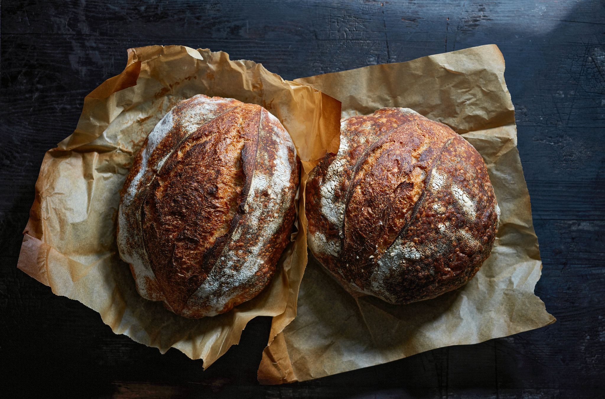

Sourdough

Ingredients
- 250g water
- 150g sourdough starter
- 25g olive oil
- 500g bread flour
- 10g fine sea salt
Instructions
- Whisk water, sourdough starter and olive oil together in a large bowl.
- Combine flour and salt, kneading by hand until dough is evenly combined.
- Cover with plastic wrap or damp cloth, let sit or 'autolyse' for 30 minutes. After dough has rested, work
into a ball directly in the bowl.
- Let rise at room temperature (between 3-12 hours until double in size)
- Fold dough into a boule shape, let rise for 1 hour covered on tray
- Place in oven preheated to 400f, cook 20 min covered, then 40 min open until deep golden brown
- Cool on wire rackk 1 hour